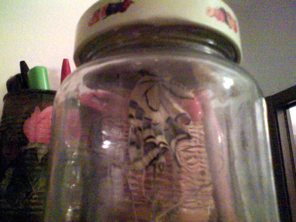
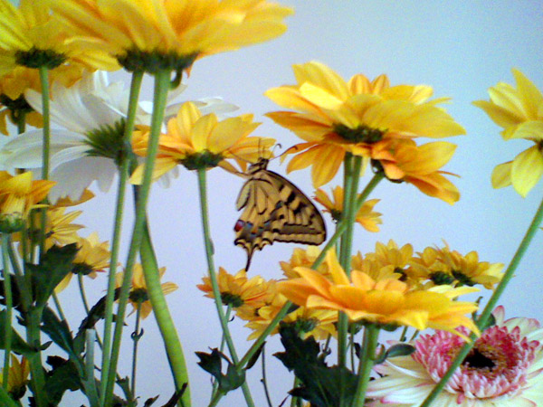
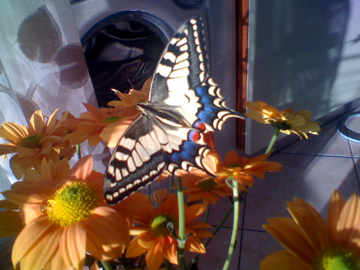
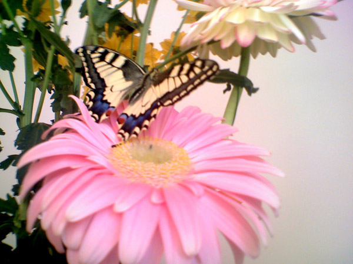

Il mio Macaone domestico

Correva la primavera dell'anno 2008, nel prezzemolo che coltivavo
sul balcone trovai un bruco identico a questo. Siccome era oggettivamente bello,
per essere un bruco, decisi di portarlo in casa per evitare che qualche merlo se lo mangiasse.
Fu così che dopo qualche mese, con mia grande sorpresa, mi ritrovai in casa...

...uno splendido esemplare di Macaone maschio.
Una delle farfalle più grandi e belle di tutta Europa.

Per diversi giorni (poco più di una settimana) ha vissuto in casa con noi,
non sembrava nemmeno avere intenzione di andarsene,
anche perché fuori il tempo era davvero pessimo.

Così viveva principalmente
sul lampatario...

...e in un mazzo di fiori gigantesco che gli comprai (destando i commenti
sarcastici della mia ragazza che un mazzo di fiori così non lo aveva ancora mai
visto...).

Di tutti i fiori sembrava apprezzare soprattutto questi arancioni e gialli.

Gli piacevano al punto che non si faceva problemi a volarci sopra mentre ne tenevo
qualcuno in mano (ogni tanto mi volava anche addosso, ma principalmente per scagazzarmi).
Mi sono convinto che secondo il bon ton farfallesco lo scagazzamento debba essere
una delle massime espressioni di affetto e gratitudine...

Questo fiorellone rosa non lo disdegnava per passeggiatine varie e letto per la notte.

Poi, finalmente, arrivarono una bella giornata e il momento giusto per lasciarla andare.